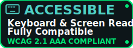

📌 Dichiarazione di Accessibilità
BiotechProject è impegnato a garantire che il progetto sia accessibile a tutti, inclusi utenti con disabilità visive, uditive, cognitive o motorie.
🎯 Conformità agli standard
Questo sito rispetta i principi delle Linee guida per l’accessibilità dei contenuti web (WCAG) 2.1, livello AA.
✅ Caratteristiche di accessibilità
- Navigazione da tastiera: Tutte le funzionalità sono accessibili usando solo i tasti Tab, Enter, Spazio e Esc.
- Compatibilità con screen reader: Struttura semantica HTML, ARIA labels e stato dinamico gestito correttamente.
- Contrasto testo/sfondo: Tutti i testi superano il rapporto di contrasto 4.5:1 richiesto da WCAG AA.
- Testo adattabile: Il contenuto è leggibile anche con zoom al 200%.
- Animazioni: Effetti visivi opzionali; disattivati se l'utente preferisce
prefers-reduced-motion.
🛠️ Tecnologie utilizzate
HTML5, CSS3, JavaScript (vanilla), ARIA, WAI-ARIA.
📞 Feedback e segnalazioni
Se riscontri problemi di accessibilità, ti invitiamo a segnalarcelo. Il tuo feedback ci aiuta a migliorare.
Contattaci
📅 Data ultima verifica
31 agosto 2025
"BiotechProject non è solo scienza: è inclusione! Ogni linea di codice è pensata per essere accessibile a tutti."

BiotechProject. Un progetto per un web più inclusivo.